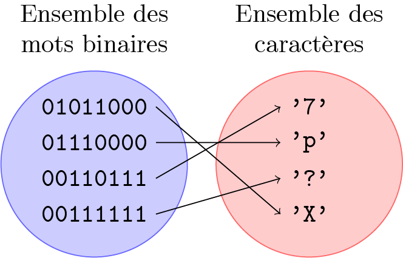
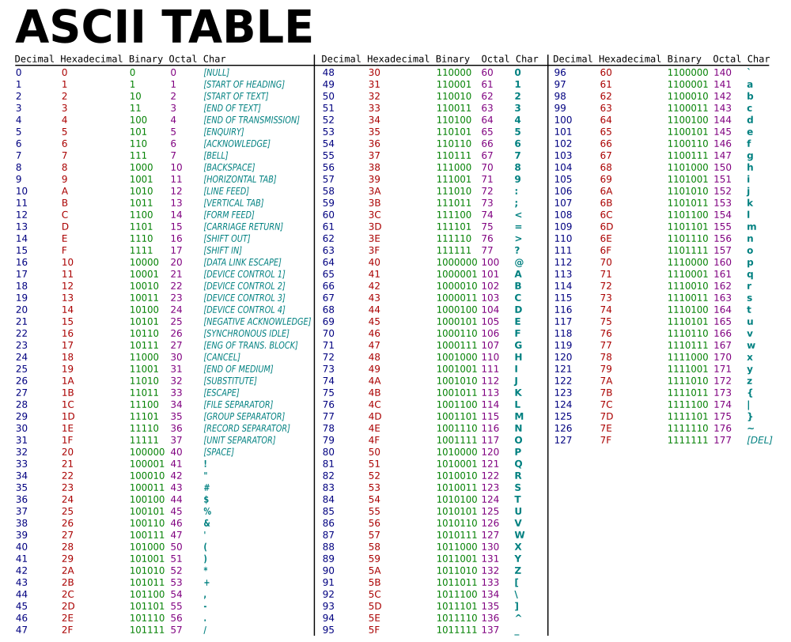
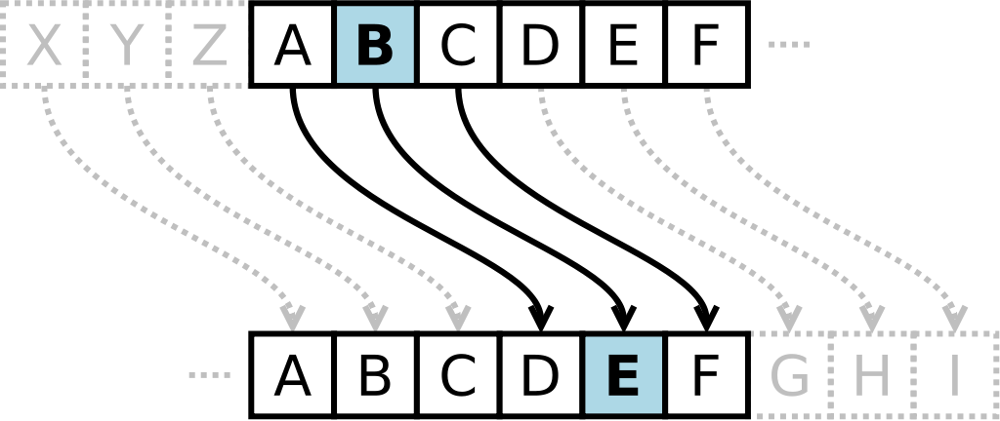
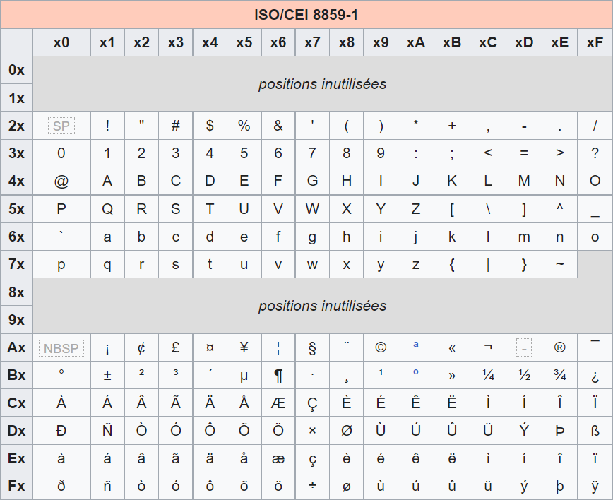

Représentation des caractères
Pour coder un ensemble de caractères (lettres) en machine, il faut expliciter quel mot binaire est associé à chacun de ces caractères. Mathématiquement, on parle de l'application bijective entre l'ensemble des mots binaires (de \(n\) bits) et de l'ensemble des caractères.

Nous avons en fait déterminé plusieurs applications auparavant : entre les mots binaires et les nombres entiers positifs, les nombres entiers relatifs (complément à 2), les réels (IEEE-754) etc. Ici, nous allons considérer trois manières courantes d'associer des mots binaires à des caractères : les normes de codage de caractères ASCII, Latin-1 et Unicode.
Norme ASCII
Le code ASCII (American Standard Code for Information Interchange) a été conçu dans les années 60 pour des textes écrits en anglais et permet de représenter 128 caractères. La norme utilise donc des mots binaires de 7 bits (\(2^7 = 128\)). Cependant, la plupart des ordinateurs travaillant presque tous sur un multiple de huit bits (un octet) depuis les années 1970, chaque caractère d'un texte en ASCII est souvent stocké dans un octet dont le dernier bit est 0.

Exercice 1
-
Quelle est la représentation héxadécimale du mot "NSI" en code ASCII ?
-
En code ASCII, comment passer d'une lettre minuscule à une lettre majuscule ?
-
Déterminer une fonction \(f\) pour passer d'une lettre majuscule codée en ASCII à sa position dans l'alphabet (\(f(\texttt{'A'}) = 0\), \(f(\texttt{'B'}) = 1\) etc.).
-
Le chiffrement par décalage (code de César) consiste à remplacer chaque lettre par une lettre à distance fixe \(d\), vers la droite dans l'ordre de l'alphabet. Pour les dernières lettres, on reprend au début :

Déterminer une fonction \(g(c, d)\) qui prend le code ASCII \(c\) d'une lettre majuscule et renvoie le code ASCII de la lettre décalée de \(d\). Par exemple, \(g(\texttt{'A'}, 3) = \texttt{'D'}\).
-
Comment convertir un mot binaire ASCII qui représente le caractère d'un chiffre vers la valeur binaire de ce dernier ?
La limitation majeure est donc l'abscence de codage pour les lettres accentuées ou des caractères de langues étrangères ! Une nouvelle norme de codage devient nécessaire pour bien écrire les textes de Proust.
Norme ISO 8859-1 (ou Latin-1)
La norme Latin-1, créee en 1986, est une extension à la norme ASCII qui code 191 caractères sur un octet, on utilise donc cette fois-ci le 8ème bit.
Dans cette représentation de la table Latin-1, une colonne indique les 4 derniers bits, et une ligne les 4 premiers :

Ansi, le caractère A est codé par le nombre héxadécimale 41, soit l'octet 01000001.
Exercice 2
Quel est le caractère représenté par nombre décimal 233 ?
La norme Latin-1 reste cependant une page de code nationale réservée notamment pour les langues européennes. D'autres normes d'encodage existent pour l'alphabet grec, cyrilique, japonais, chinois...
Norme Unicode
Un format universel, Unicode, a été développé en 1991 dans le but de remplacer l'utilisation de pages de code nationales, c'est-à-dire de faire coexister tous les alphabets et autres symboles sous un même standard.
La dernière version en date d'Unicode contient 149186 caractères. Chaque caractère est associé à un nombre, appelé codepoint. Les 128 premiers caractères sont les mêmes que ceux de la norme ASCII. Cependant, il existe différentes façons de représenter ces codepoints sous forme de bits :
-
Encodage UTF-8 : les codepoints peuvent être codés sur 8 bits et jusqu'à 48 bits. Les codepoints entre 0 et 127 sont codés sur 8 bits, ce qui les rend compatibles avec l'ASCII, tandis que les codepoints plus élevés sont codés sur un plus grand nombre de bits (par exemple, les nombres entre 128 et 2047 sont codés sur 16 bits).
-
Encodage UTF-16 : l'unité de base a une largeur de 16 bits, donc par exemple les codepoints entre 0 et 55295 sont encodés avec 16 bits. Cela rend donc l'UTF-16 incompatible avec l'ASCII.